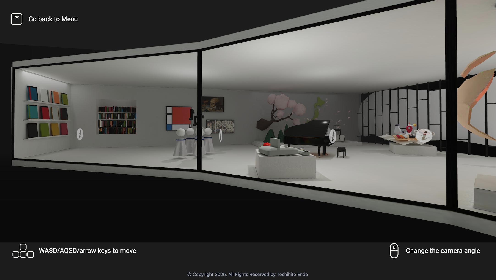
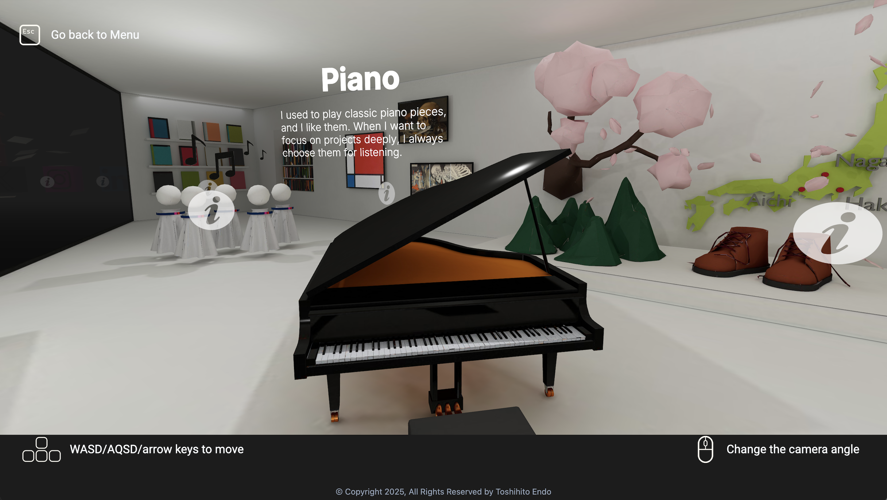
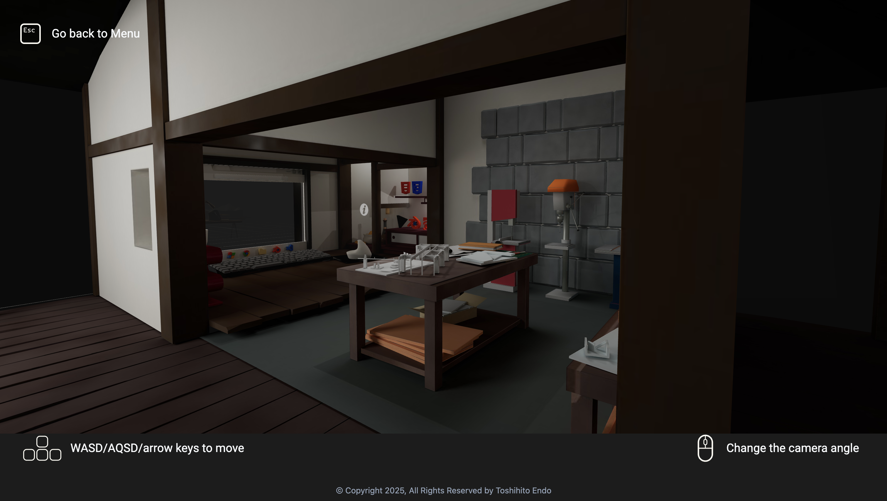
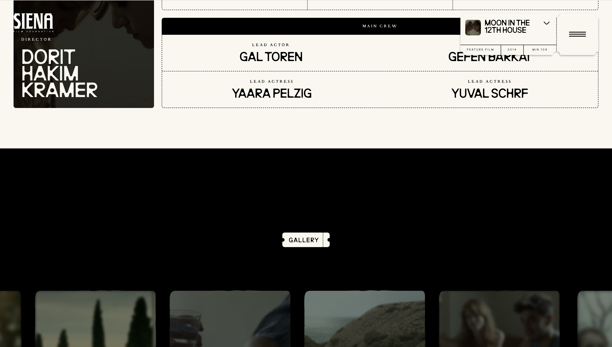
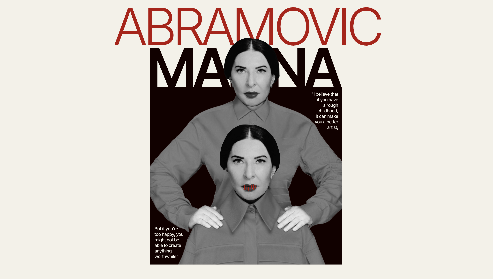
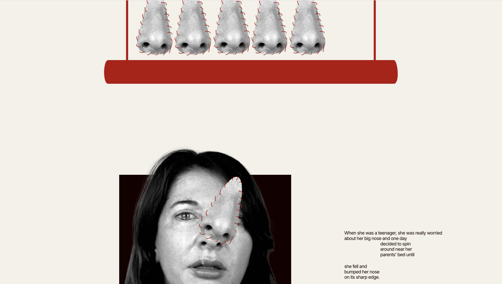
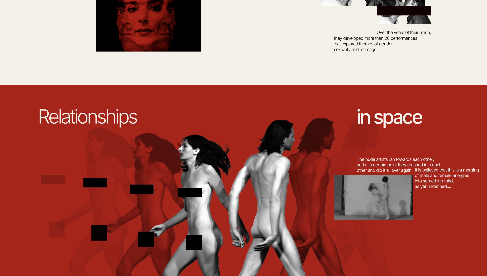

NUEVAS TENDENCIAS EN DISEÑO WEB
Awwwards
Webby Awards
FWA
CSS Design Awards
Awwwards
Webby Awards
FWA
CSS Design Awards
Toshihito Endo
El portfolio del diseñador japonés Toshihito Endo propone una
experiencia inmersiva que combina tecnología y naturaleza. Su diseño
simula el mapa de un videojuego en el que el usuario avanza descubriendo
sus proyectos. El uso de animaciones, HTML estructurado y un CSS
creativo aportan a una interfaz interactiva, envolvente y original.



Visitar web
Siena – Taboo



Esta web combina potencia visual y storytelling, presentando el trabajo
de producción audiovisual de forma cinematográfica. El diseño destaca
por su impacto visual, uso del color y animaciones al scrollear. La
organización de los contenidos y la navegación refuerzan la identidad de
marca.
Visitar web
Marina Abramović – Tilda



Esta página presenta el universo artístico de Marina Abramović como si
fuese una pieza de performance digital. Visualmente intensa y
minimalista, guía al usuario por su obra a través de una narrativa
lineal. El diseño aprovecha las herramientas de Tilda para crear una web
que es más instalación que portafolio.
Visitar web
[Nombre de otra web]
AQUI VOY A PONER MUCHAS COSAS DISTINTAS PORQUE RELAMENTE NO SE QUE
HACER, ESTO ES OSLO PARA PROBARLE TEMA DEL REPOSITORIO
Visitar web